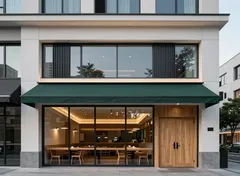
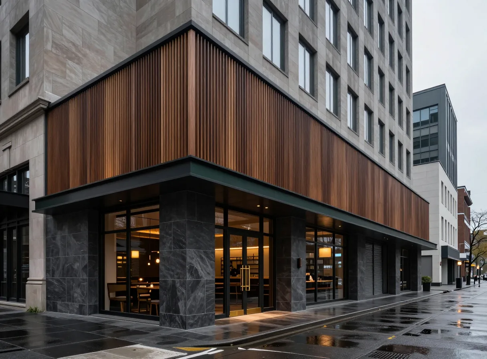

長野店｜洋食堂 グリルノート
洋食堂
GRILL NOTE
トップ
メニュー
店舗一覧
お店について
お問い合わせ
予約する
メニュー
お店について
お問い合わせ
店舗一覧
本店
石川県金沢市

富山店
富山県富山市
福井店
福井県福井市
長野店
長野県長野市
岐阜店
岐阜県岐阜市
名古屋店
愛知県名古屋市

イメージ写真
長野県長野市
長野店
店舗情報
住所
長野県長野市
営業時間
［未定］
定休日
［未定］
電話
［未定］
アクセス
［未定］
［地図］
ご予約・メニュー
ご来店の前に、メニューをご覧いただけます。ご予約の受付方法は［未定］です。
予約する
メニューを見る
ほかの店舗
本店
石川県金沢市
富山店
富山県富山市
福井店
福井県福井市
岐阜店
岐阜県岐阜市
名古屋店
愛知県名古屋市
店舗一覧へ戻る